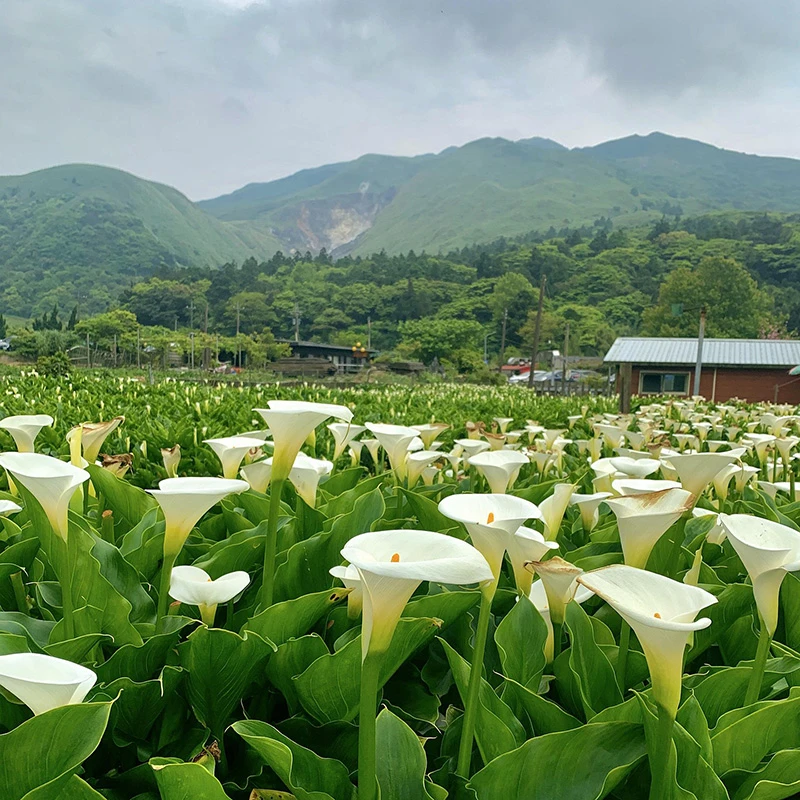

陽明山
陽明山的風景如同一首動人的田園詩，其中最靈動的筆觸莫過於竹子湖的海芋。每年春夏之交，翠綠的山谷被潔白的花海覆蓋。
海芋優雅的杯狀花苞挺立於水田間，在山嵐與薄霧的繚繞下，散發出一種靜謐、出塵的氣質。
除了柔美的花田，陽明山更擁有粗獷的小油坑噴氣孔、遼闊的擎天崗草原，以及能遠眺台北盆地的壯麗視野。這種「剛柔並濟」的自然層次，讓這座後花園成為都市人洗滌心靈的最佳去處。

太魯閣
太魯閣國家公園是台灣大自然最壯麗的「神之刻痕」。其精華在於千萬年來由立霧溪切割而出的大理岩深谷，兩岸峭壁千仞，展現了造山運動與河蝕作用的極致美學。
對旅遊玩家而言，這裡不只是風景區，更是立體的地質教室。經典的燕子口步道能近距離感受峽谷的鬼斧神工；長春祠與九曲洞則交織了地質景觀與築路人的血淚歷史。若追求靜謐，建議清晨前往步道，看雲霧環繞在山脈間，那份宏偉與靈動交織的震撼，絕對值得一生必訪一次。

佛光山
佛光山不只是宗教聖地，更是集現代建築美學與心靈療癒於一體的藝術殿堂。這裡主要分為兩個核心：一是充滿傳統莊嚴氣息的「佛光山主山」，石階與大殿間流淌著修行的靜謐；二是壯闊宏偉的「佛寺紀念館」。那條由八座寶塔環繞的「成佛大道」，直通世界最高的坐佛，視覺震撼力極強。
對旅客來說，這裡的蔬食料理與抄經體驗能讓人暫時脫離塵囂。無論你是否有宗教信仰，置身於那份寧靜的氛圍與壯麗的建築群中，都能感受到一種由內而外的平靜。
住宿安全
在台灣旅行，住宿整體安全高，飯店、民宿多合法經營，暴力犯罪極少，國際評估（如Smart Traveller、美國國務院）均視為低風險。但仍需注意以下住宿安全要點：
1.選擇合法住宿：優先選有「旅館業登記證」或「民宿登記證」的業者，可上交通部觀光署網站查詢。
2.進房安全檢查：進門先確認門鎖、貓眼、門鏈正常。
3.個人防護：隨時加扣安全鎖/防盜鏈；不隨便開門給陌生人（可透過貓眼或電話確認）；貴重物品、護照、現金放飯店保險箱或隨身不離。
4.火災與緊急：熟悉逃生路線圖與最近出口；勿在床上抽煙或蓋燈；聽到警報立即由緊急出口離開。
5.其他提醒：2025年起，飯店、民宿不再主動提供小瓶洗髮乳、牙刷等一次性用品，建議自備以環保又安心。
做好這些基本防範，台灣住宿安全舒適，放心享受旅程吧！

旅遊安全
在台灣旅行整體非常安全，治安良好，暴力犯罪極少，國際評估（如美國國務院、澳洲Smart Traveller）均為「正常警覺」等級（Level 1），夜間外出也相對安心。但仍需注意以下幾點：
1. **交通安全**：過馬路務必看左右、遵守行人號誌；搭乘遊覽車或租車時務必繫安全帶。
2. **自然災害**：台灣地震頻繁，建議下載「地震速報」App，入住時熟悉逃生路線。
3. **水域活動**：戲水、浮潛或搭船務必穿救生衣，嚴禁在無救生員、無標示或紅旗警示的海邊、溪流下水。
4. **其他**：登山或戶外活動評估自身體力，攜帶藥品與保暖衣物；遇緊急狀況撥打110（警察）、119（消防/救護）。
只要做好基本防範，台灣是極適合自由行與家庭旅遊的安全目的地，盡情享受美食與美景吧！
交通部觀光署台灣最高觀光管理部門
觀光署不再只是行政機關，更像是一位全方位的數位導遊。如果你問我他們能提供什麼服務，簡單說就是「讓你的旅行變得很簡單」。出發前的全能助手： 透過「台灣觀光資訊網」，你可以一次找齊全台的合法旅宿、在地美食，還有最新、最夯的節慶活動（如台灣燈會、自行車節）
24小時不打烊的諮詢： 撥打 0800-011-765 旅遊熱線，不管你在哪，都有中、英、日、韓語專人為你指路。無論你是想規劃一場環島挑戰，還是只想在週末找個國家風景區發呆，觀光署就是你最強大的後盾。